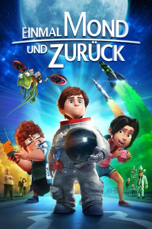

 
 IMDB-Wertung: 5.9 / 10
IMDB-Wertung: 5.9 / 10  Metascore:
Metascore: 
Mike Goldwing ist ein 12-jähriger Jungen, der gemeinsam mit seinen Freunden und der verrückten Hauseidechse Igor leidenschaftlich gerne surft. Und eigentlich wäre die Welt für ihn in Ordnung, gäbe es da nicht den schon lange währenden Zwist zwischen seinem Vater und seinem Großvater. Seit Jahren sprechen die beiden Astronauten nicht mehr miteinander, und so ist es Mikes sehnlichster Wunsch, die Familie endlich wieder zu versöhnen. Die Gelegenheit scheint zum Greifen nah, als die zwei für eine gemeinsame Mondmission ausgewählt werden … wäre da nicht der exzentrische Millionär Richard Carlson, der diese mit allen Mitteln zu vereiteln versucht.
Jahr: 2015
Dauer: 94 Minuten
FSK: 0
Land: Spanien Studio: Paramount PicturesTonspuren: DD5.1 - ,
Untertitel:
Auflösung: 1080p (1920x804) Größe: 6871 MB
Genre: Komödie, Abenteuer, Animation/Trick
Regisseur: Enrique Gato
Drehbuch: Oliver Kienle
Soundtrack:
Darsteller:
Datei: X:\Kinder Filme (A-F)\Einmal Mond und zurück (2015, FSK0, 1920x804) 3D.mkv seit 01.05.2017
Festplatte: Kinder-Filme+Trick
 Es gibt insgesamt 68 Filme in der Gruppe 'Kinder Filme (A-F)'
Es gibt insgesamt 68 Filme in der Gruppe 'Kinder Filme (A-F)'